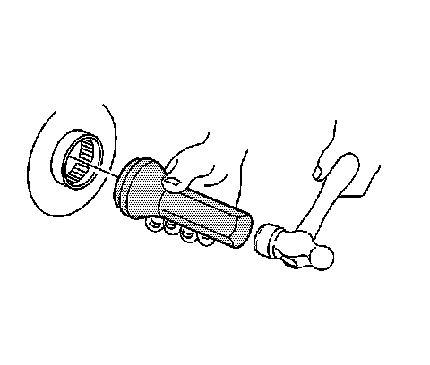

Rear Axle Shaft Seal and/or Bearing Replacement (9.5 HD Axle)
Rear Axle Shaft Seal and/or Bearing Replacement (9.5 HD Axle)
Tools Required
^ J 8092 Universal Driver Handle - 3/4 in - 10
^ J 2619-01 Slide Hammer
^ J 29709 Wheel Bearing Installer (9.5 inch Axle)
^ J 29712 Wheel Bearing Remover (9.5 inch Axle)
^ J 29713 Axle Seal Installer (9.5 inch Axle)
Removal Procedure
1. Raise and support the vehicle. Refer to Lifting and Jacking the Vehicle.
2. Remove the tire and wheel assembly.
3. Remove the rear axle housing cover.
4. Remove the axle shaft.
5. Remove the axle shaft seal and the bearing from the axle housing using the J 29712.
Installation Procedure
1. Install the axle shaft bearing using the J 29709 (1) and the J 8092 (2).
2. Drive the axle shaft bearing into the axle housing until the tool bottoms against the tube.

3. Install the axle shaft seal using the J 29713.
4. Drive the tool into the bore until the axle shaft seal bottoms flush with the tube.
5. Install the axle shaft.
6. Install the rear axle housing cover.
7. Install the tire and wheel assembly.
8. Fill the rear axle. Refer to Rear Axle Lubricant Replacement.
9. Lower the vehicle.